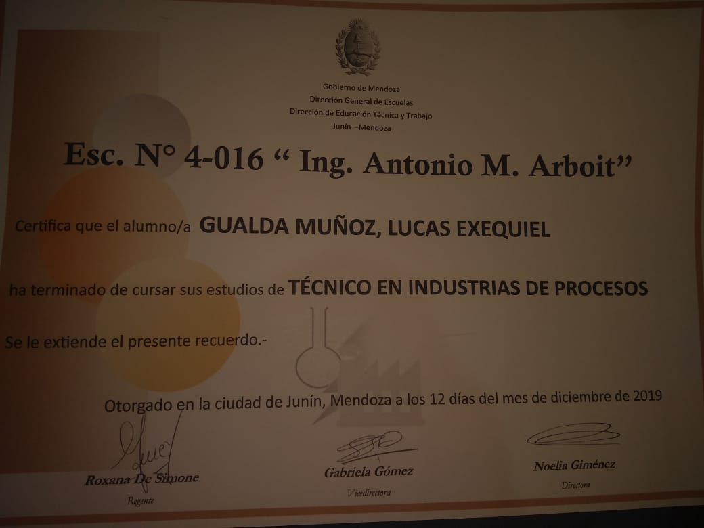

Vivo en Villa Mercedes, tengo 20 años, soy Técnico en industrias de proceso y Estudiante de Ingeniería en sistema de información en la universidad Nacional de Villa mercedes
Cooperativa de productores de Junín LDTA. Ayudante de laboratorio
Realizaba labores de analisis de vino durante sus distintas etapas de produccion y al finalizar esta misma
Educacion Primaria: Graduado de la escula 1-663 Docentes Jubilados Del Este, ubicada la localidad de La colonia, departamento de Junín, Mendoza
Educacion Secundaria: Graduado de la escuela 4-016 Ingeniero Antonio Marcelo Arboit ubicada en la localidad de Junín, departamento de Junín, Mendoza con el titulo de tecnico en industria de procesos
